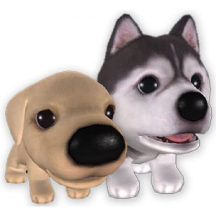

The Dog Island: The Story of the One Flower
Es un juego de rol y aventuras lanzado en abril de 2007 en Japón para las consolas de videojuegos Nintendo Wii y PlayStation 2. En el juego los jugadores controlan a un perro y deben emprender un viaje para buscar una flor especial para ayudar a su hermano/hermana que enfermo, solo puede encontrar la flor al lograr el objetivo de convertirse en un "maestro del olfato". El jugador interactúa con varios otros animales en el juego que dan pistas e información para ayudar en la búsqueda. El videojuego está basado en la franquicia The Dog and Friends.
El concepto general del juego se basa en el estilo de "The Dog, Artlist Collection", donde los cachorros son fotografiados con un estilo súper deformado, mostrando una cabeza enorme, un cuerpo diminuto y enfoque en la boca, la nariz y los ojos. Es espeluznante, pero sin duda es adorable. Todo el juego está basado en este diseño, incluso tiene "Artlist collection" en la caja, así que los jugadores casuales ya saben en qué se est´n metiendo con el estilo, pero en realidad es una cantidad sorprendente de diversió simplista. Los jugadores ingresan al mundo de The Dog Island, seleccionan entre casi 50 razas de cachorros para jugar y luego se embarcan en una aventura llena de piratas, minijuegos, cientos de olores para descubrir una historia general que gira en torno a la enfermedad del hermano/a pequeño/a del personaje principal, y una búsqueda para encontrar una cura misteriosa. no es la historia m´s profunda que existe, pero llega rápidamente al centro del juego, que por supuesto son los cachorritos insultantemente lindos.

Plataformas:
Play Station y Wii
Género:
Aventura Rol-Play
Desarrollador:
Yuke's Media Creations
Distribuidora:
Ubisoft
Lanzamiento:
26 de Abril, 2007(Japón)